Reconnaissance: Information Gathering for the Ethical Hacker
الاستطلاع: جمع المعلومات للمخترق الأخلاقي
Eng. Zahra Rajeh, M.Sc. · 57 slides, fully translated, nothing omitted.
م. زهراء راجح · ٥٧ شريحة مترجمة بالكامل دون حذف أي شيء.
RECONNAISSANCE: INFORMATION GATHERING FOR THE ETHICAL HACKER
Ethical Hacking and Penetration
Eng. Zahra Rajeh, M.Sc.
OUTLINE
- Active and passive footprinting
- Methods and procedures in information gathering
- The use of social networking, search engines, and Google hacking in information gathering
- The use of whois, ARIN, and nslookup in information gathering
- Describing the NS record types
الاستطلاع: جمع المعلومات للمخترق الأخلاقي
الاختراق الأخلاقي واختبار الاختراق
م. زهراء راجح، ماجستير
المحتويات
- البصمة النشطة والسلبية (Active & passive footprinting)
- الأساليب والإجراءات في جمع المعلومات
- استخدام شبكات التواصل الاجتماعي ومحركات البحث واختراق جوجل في جمع المعلومات
- استخدام whois و ARIN و nslookup في جمع المعلومات
- وصف أنواع سجلات NS
The first step in ethical hacking is reconnaissance, which means gathering information about the target. This process can be divided into two types: passive and active.
Passive reconnaissance is the collection of information without directly interacting with the target, so the target does not know that any data has been gathered.
Active reconnaissance involves direct interaction with the target’s systems using tools or probes. While active methods often provide more detailed information, they also carry a greater chance of being detected, which puts the hacker’s activities at higher risk.
الخطوة الأولى في الاختراق الأخلاقي هي الاستطلاع، ويعني جمع المعلومات عن الهدف. وتنقسم هذه العملية إلى نوعين: سلبي ونشط.
الاستطلاع السلبي هو جمع المعلومات دون التفاعل المباشر مع الهدف، وبالتالي لا يعلم الهدف بأن أي بيانات قد جُمعت عنه.
الاستطلاع النشط يتضمن تفاعلاً مباشراً مع أنظمة الهدف باستخدام أدوات أو مجسّات. ورغم أن الأساليب النشطة توفّر عادةً معلومات أكثر تفصيلاً، إلا أنها تحمل احتمالية أكبر للاكتشاف، مما يجعل أنشطة المخترق أكثر خطورة.
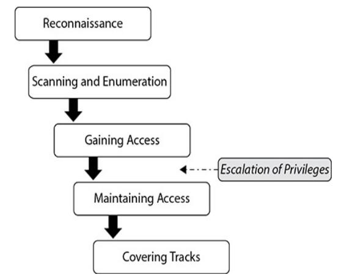
Footprinting is more than just the first step of an attack; it is an essential skill for any ethical hacker. During this stage, the goal is to gather any information about the target, no matter how big or small. This information does not have to be technical. Useful data can include network architecture, public-facing websites, physical security measures, and even employee routines.
Information about employees is also very valuable, as employees represent a major target later in the test. Much of this data is relatively easy to obtain if one knows where to look.
As we mentioned, information gathering, or footprinting, can be performed using two primary approaches:
- Passive footprinting
- Active footprinting
البصمة (Footprinting) أكثر من مجرد الخطوة الأولى في الهجوم؛ فهي مهارة أساسية لأي مخترق أخلاقي. والهدف في هذه المرحلة هو جمع أي معلومة عن الهدف مهما كانت كبيرة أو صغيرة. وليس شرطاً أن تكون هذه المعلومات تقنية. فمن البيانات المفيدة: بنية الشبكة، والمواقع العامة، وإجراءات الأمن المادي، وحتى روتين الموظفين اليومي.
المعلومات عن الموظفين ذات قيمة عالية أيضاً، لأنهم يمثلون هدفاً رئيسياً لاحقاً في الاختبار. وكثير من هذه البيانات يسهل نسبياً الحصول عليها إذا عرف المرء أين يبحث.
كما ذكرنا، يمكن تنفيذ جمع المعلومات (البصمة) بأسلوبين رئيسيين:
- البصمة السلبية (Passive footprinting)
- البصمة النشطة (Active footprinting)
Passive footprinting involves collecting information from publicly available sources without directly interacting with the target system, network, or organization. Common sources include websites, social media platforms, public records, search engines, and online databases. Since no direct contact is made with the target, passive footprinting generally presents a low risk of detection.
Example: Examining an organization's website, reviewing employee profiles on social media, searching public DNS records, or collecting information from search engines.
تتضمن البصمة السلبية جمع المعلومات من مصادر متاحة للعامة دون التفاعل المباشر مع نظام الهدف أو شبكته أو مؤسسته. ومن المصادر الشائعة: المواقع الإلكترونية، ومنصات التواصل الاجتماعي، والسجلات العامة، ومحركات البحث، وقواعد البيانات على الإنترنت. ولأنه لا يحدث أي اتصال مباشر بالهدف، فإن البصمة السلبية تمثل عموماً خطراً منخفضاً للاكتشاف.
مثال: فحص موقع المؤسسة، ومراجعة ملفات الموظفين على وسائل التواصل، والبحث في سجلات DNS العامة، أو جمع معلومات من محركات البحث.
Active footprinting involves direct interaction with the target environment to obtain additional information. This may include activities such as network scanning, port scanning, service enumeration, and other techniques that communicate with target systems. Although active footprinting often provides more detailed and accurate information, it increases the likelihood of detection by generating observable network traffic.
Example: Performing a ping sweep, conducting a port scan with tools such as Nmap, or enumerating services running on target systems.
تتضمن البصمة النشطة التفاعل المباشر مع بيئة الهدف للحصول على معلومات إضافية. وقد تشمل أنشطة مثل فحص الشبكة، وفحص المنافذ، وتعداد الخدمات، وغيرها من التقنيات التي تتواصل مع أنظمة الهدف. ورغم أنها توفر معلومات أكثر تفصيلاً ودقة، إلا أنها تزيد احتمالية الاكتشاف لأنها تولّد حركة مرور شبكية يمكن ملاحظتها.
مثال: تنفيذ مسح Ping (ping sweep)، أو إجراء فحص للمنافذ بأدوات مثل Nmap، أو تعداد الخدمات التي تعمل على أنظمة الهدف.
Search engines can reveal a wide range of information, including company websites, contact details, employee profiles, publicly accessible documents, subdomains, email addresses, and technology-related information. In addition, mapping services such as Google Maps and Bing Maps can provide geographical information about an organization's facilities, including building locations, surrounding infrastructure, and satellite imagery.
Because search engines and public information sources require no direct interaction with target systems, they are often the starting point of the reconnaissance process and can provide significant intelligence before active footprinting techniques are performed.
يمكن لمحركات البحث أن تكشف مجموعة واسعة من المعلومات، منها مواقع الشركات، وبيانات الاتصال، وملفات الموظفين، والمستندات المتاحة للعامة، والنطاقات الفرعية، وعناوين البريد الإلكتروني، والمعلومات المتعلقة بالتقنيات. إضافة إلى ذلك، يمكن لخدمات الخرائط مثل خرائط جوجل وبينج أن توفر معلومات جغرافية عن منشآت المؤسسة، تشمل مواقع المباني، والبنية التحتية المحيطة، وصور الأقمار الصناعية.
ولأن محركات البحث ومصادر المعلومات العامة لا تتطلب أي تفاعل مباشر مع أنظمة الهدف، فهي غالباً نقطة البداية في عملية الاستطلاع، ويمكنها توفير معلومات استخباراتية مهمة قبل تنفيذ تقنيات البصمة النشطة.
| Information Sought | المعلومة المطلوبة | Source · المصدر |
|---|---|---|
| Company location | موقع الشركة | Google Maps |
| Employee names and positions | أسماء الموظفين ومناصبهم | |
| Public documents (PDF, DOCX) | المستندات العامة (PDF, DOCX) | Google Search |
| Email addresses | عناوين البريد الإلكتروني | Search engines, company website |
| Web server information | معلومات خادم الويب | Netcraft |
| Domain ownership information | معلومات ملكية النطاق | WHOIS databases |
Job advertisement platforms are valuable sources of information during the footprinting phase of an ethical hacking assessment. Organizations frequently publish technical requirements when recruiting employees, and these requirements can unintentionally reveal details about the organization's technology infrastructure.
Job postings may disclose information about operating systems, database management systems, web technologies, cloud platforms, security solutions, programming languages, and network administration tools used within the organization. By analyzing these descriptions, security professionals can gain insight into the target environment and identify technologies that may be present on the network.
Examples of information obtained from job postings:
- Operating systems (Windows Server, Linux, Ubuntu)
- Database systems (MySQL, PostgreSQL, Microsoft SQL Server)
- Cloud platforms (AWS, Azure, Google Cloud)
- Security tools (Splunk, Fortinet, Palo Alto)
- Virtualization technologies (VMware, Hyper-V)
- Programming languages and frameworks
منصات إعلانات الوظائف مصادر قيّمة للمعلومات أثناء مرحلة البصمة في تقييم الاختراق الأخلاقي. فالمؤسسات تنشر كثيراً المتطلبات التقنية عند توظيف الموظفين، وهذه المتطلبات قد تكشف دون قصد تفاصيل عن البنية التقنية للمؤسسة.
قد تفصح إعلانات الوظائف عن معلومات حول أنظمة التشغيل، وأنظمة إدارة قواعد البيانات، وتقنيات الويب، والمنصات السحابية، والحلول الأمنية، ولغات البرمجة، وأدوات إدارة الشبكات المستخدمة داخل المؤسسة. وبتحليل هذه الأوصاف يستطيع مختصو الأمن تكوين تصور عن بيئة الهدف وتحديد التقنيات التي قد تكون موجودة على الشبكة.
أمثلة على المعلومات المستخلصة من إعلانات الوظائف:
- أنظمة التشغيل (Windows Server، Linux، Ubuntu)
- أنظمة قواعد البيانات (MySQL، PostgreSQL، Microsoft SQL Server)
- المنصات السحابية (AWS، Azure، Google Cloud)
- الأدوات الأمنية (Splunk، Fortinet، Palo Alto)
- تقنيات المحاكاة الافتراضية (VMware، Hyper-V)
- لغات البرمجة وأطر العمل
Social media platforms are important sources of publicly available information during reconnaissance activities. Employees often share professional achievements, job responsibilities, organizational activities, and technical expertise through social networking platforms. This information can help security professionals understand an organization's structure, technologies, and personnel.
Professional networking platforms such as LinkedIn may reveal employee roles, departmental structures, certifications, and technology stacks. Other social media platforms may provide information about company events, organizational changes, partnerships, and publicly disclosed projects.
منصات التواصل الاجتماعي مصادر مهمة للمعلومات المتاحة للعامة أثناء أنشطة الاستطلاع. فالموظفون يشاركون غالباً إنجازاتهم المهنية، ومسؤولياتهم الوظيفية، وأنشطة المؤسسة، وخبراتهم التقنية عبر هذه المنصات. وتساعد هذه المعلومات مختصي الأمن على فهم هيكل المؤسسة وتقنياتها وكوادرها.
منصات التواصل المهني مثل لينكدإن قد تكشف أدوار الموظفين، وهياكل الأقسام، والشهادات المهنية، والحزم التقنية المستخدمة. أما المنصات الأخرى فقد توفر معلومات عن فعاليات الشركة، والتغييرات التنظيمية، والشراكات، والمشاريع المعلنة.
Google Hacking Database (GHDB)
The Google Hacking Database (GHDB) is a publicly available collection of advanced Google search commands. These commands, often called "Google Dorks," are designed to find specific types of information that ordinary searches typically do not reveal.
قاعدة بيانات اختراق جوجل (GHDB)
قاعدة بيانات اختراق جوجل هي مجموعة متاحة للعامة من أوامر البحث المتقدمة في جوجل. وتُسمّى هذه الأوامر غالباً «Google Dorks»، وهي مصمَّمة لإيجاد أنواع محددة من المعلومات التي لا تكشفها عمليات البحث العادية عادةً.
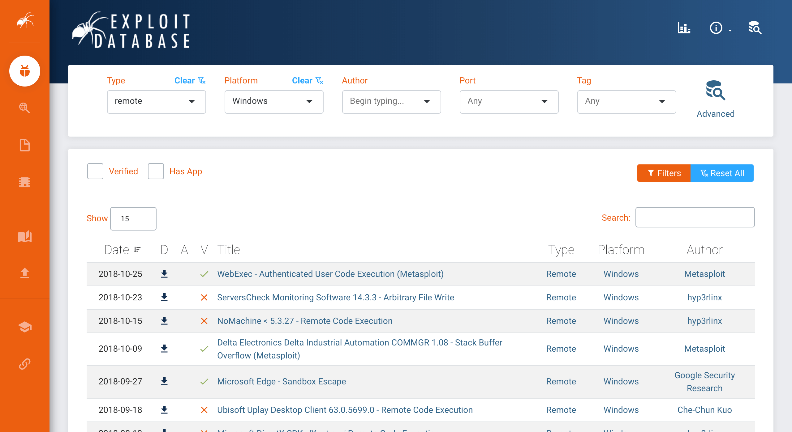
Google Hacking, also known as Google Dorking, is a footprinting technique that uses advanced search operators to locate specific information indexed by search engines. Rather than performing ordinary keyword searches, specialized search operators are used to discover sensitive information, exposed resources, misconfigured systems, or publicly accessible files.
Information that may be discovered:
- Public documents
- Email addresses
- Login pages
- Directory listings
- Exposed configuration files
- Publicly accessible reports and presentations
اختراق جوجل، ويُعرف أيضاً بـ Google Dorking، هو تقنية من تقنيات البصمة تستخدم معاملات بحث متقدمة لتحديد معلومات معيّنة مفهرَسة لدى محركات البحث. وبدلاً من البحث العادي بالكلمات المفتاحية، تُستخدم معاملات بحث متخصصة لاكتشاف معلومات حساسة، وموارد مكشوفة، وأنظمة سيئة الإعداد، أو ملفات متاحة للعامة.
المعلومات التي قد تُكتشف:
- المستندات العامة
- عناوين البريد الإلكتروني
- صفحات تسجيل الدخول
- قوائم المجلدات (Directory listings)
- ملفات الإعدادات المكشوفة
- التقارير والعروض التقديمية المتاحة للعامة
| Operator | Example Query | Purpose · الغرض |
|---|---|---|
filetype | site:company.com filetype:pdf | Find PDF documents on a company's website. إيجاد مستندات PDF على موقع الشركة. |
index of | intitle:"index of" backup | Search for exposed backup directories. البحث عن مجلدات النسخ الاحتياطي المكشوفة. |
info | info:company.com | View Google's information about a website. عرض معلومات جوجل عن موقع معيّن. |
intitle | intitle:"login" | Find login pages. إيجاد صفحات تسجيل الدخول. |
inurl | inurl:admin | Locate administrative interfaces. تحديد واجهات الإدارة. |
link | link:company.com | Identify pages linking to a website. تحديد الصفحات التي ترتبط بموقع معيّن. |
related | related:microsoft.com | Find websites similar to Microsoft. إيجاد مواقع مشابهة لمايكروسوفت. |
site | site:company.com | Display pages indexed from a specific website. عرض الصفحات المفهرَسة من موقع محدد. |
| Operator | Example Query | Purpose · الغرض |
|---|---|---|
related | related:cnn.com | Search for sites related to a given domain. البحث عن مواقع مرتبطة بنطاق معيّن. |
allintitle | allintitle:android google | Search for pages with multiple words in the title tag. البحث عن صفحات تحوي عدة كلمات في وسم العنوان. |
allinurl | allinurl:android google | Search for pages with multiple words in the URL. البحث عن صفحات تحوي عدة كلمات في الرابط. |
intext | intext:apple | Search for pages with a particular word in their content. البحث عن صفحات تحوي كلمة معيّنة في محتواها. |
allintext | allintext:apple iphone | Search for pages with multiple words in their content. البحث عن صفحات تحوي عدة كلمات في محتواها. |
before | apple before:2022-12-29 | Search for results from before a particular date. البحث عن نتائج قبل تاريخ معيّن. |
after | apple after:2022-12-29 | Search for results from after a particular date. البحث عن نتائج بعد تاريخ معيّن. |
| Operator | Syntax | Description · الوصف |
|---|---|---|
" " (Quotation Marks) | "admin login" | Searches for the exact phrase as written. يبحث عن العبارة الدقيقة كما كُتبت. |
OR | admin OR login | Returns results containing either term. يُرجع نتائج تحوي أحد المصطلحين. |
AND | admin AND login | Returns results containing both terms. (Google usually assumes AND by default.) يُرجع نتائج تحوي كلا المصطلحين (جوجل يفترض AND افتراضياً). |
- (Minus) | windows -linux | Excludes pages containing the specified term. يستبعد الصفحات التي تحوي المصطلح المحدد. |
* (Wildcard) | "password * file" | Represents one or more unknown words within a search phrase. يمثّل كلمة أو أكثر مجهولة داخل عبارة البحث. |
( ) | (admin OR login) site:example.com | Groups search terms and operators to control the search logic. يجمّع مصطلحات ومعاملات البحث للتحكم في منطق البحث. |
.. (Range) | server 2016..2025 | Searches for values within a specified numeric range. يبحث عن قيم ضمن نطاق رقمي محدد. |
Examples: using allinurl:tsweb/default.htm for finding web servers that have a specific remote access tool.
أمثلة: استخدام allinurl:tsweb/default.htm لإيجاد خوادم ويب تحتوي على أداة وصول عن بُعد محددة.
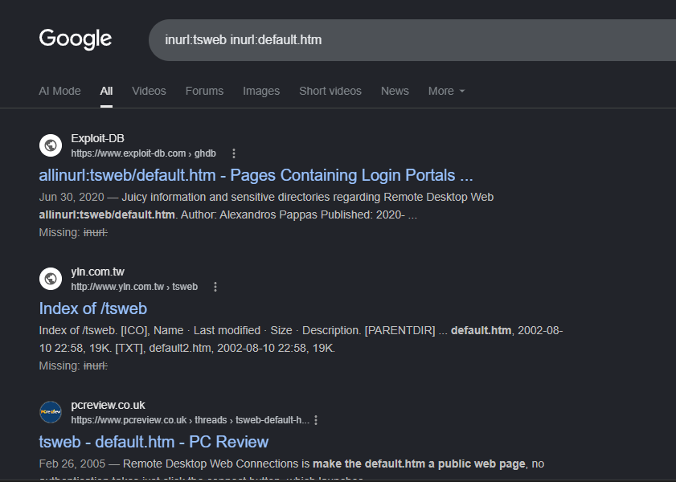
allinurl:tsweb inurl:default.htmالشريحة ٢٥ — نتائج جوجل للبحث allinurl:tsweb inurl:default.htmExamples: using filetype:sql "INSERT INTO" — Exposes database backups/schemas.
“SQL dumps are frequently left in web roots; contains usernames, emails, hashed passwords.”
أمثلة: استخدام filetype:sql "INSERT INTO" — يكشف نسخ قواعد البيانات الاحتياطية ومخططاتها.
«غالباً ما تُترك ملفات تفريغ SQL في جذور مواقع الويب؛ وهي تحتوي على أسماء مستخدمين وبُرد إلكترونية وكلمات مرور مُجزّأة (hashed).»
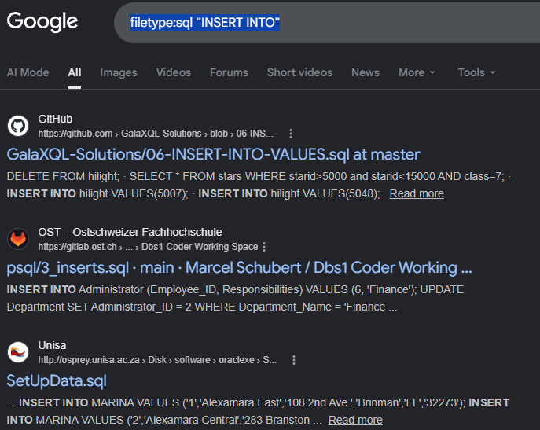
filetype:sql "INSERT INTO"الشريحة ٢٦ — نتائج جوجل للبحث filetype:sql "INSERT INTO"Try also using the following Google Dorking:
Explain the results.
جرّب أيضاً استخدام أوامر الـ Google Dorking التالية:
واشرح النتائج.
Shodan (Sentient Hyper-Optimized Data Access Network) is a specialized search engine. Unlike Google, which searches for websites and documents, Shodan searches for devices connected to the internet.
These devices include:
- Computers and servers
- Routers and network equipment
- Webcams and security cameras
- Medical devices
- Industrial control systems (power plants, factories)
- Smart home devices (thermostats, doorbells, refrigerators)
شودان (Shodan) — اختصار لـ «شبكة الوصول للبيانات فائقة التحسين والواعية» — هو محرك بحث متخصص. وعلى عكس جوجل الذي يبحث عن المواقع والمستندات، يبحث شودان عن الأجهزة المتصلة بالإنترنت.
وتشمل هذه الأجهزة:
- أجهزة الحاسوب والخوادم
- الموجّهات ومعدات الشبكات
- كاميرات الويب وكاميرات المراقبة
- الأجهزة الطبية
- أنظمة التحكم الصناعي (محطات الطاقة، المصانع)
- أجهزة المنزل الذكي (منظمات الحرارة، أجراس الأبواب، الثلاجات)
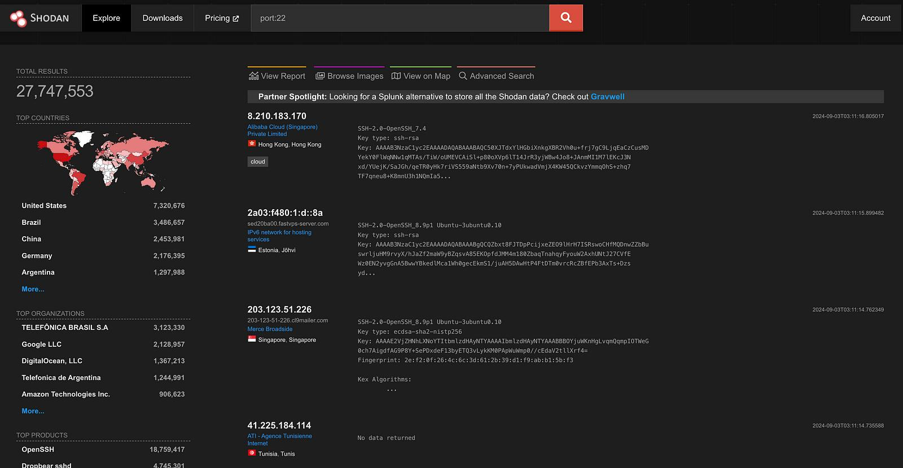
Open-Source Intelligence (OSINT) is the practice of collecting, analyzing, and synthesizing publicly available information to produce actionable intelligence.
OSINT tools may or may not be open source. Some tools are free and open, others require registration to use free versions, and others require a fee for use.
الاستخبارات مفتوحة المصدر (OSINT) هي ممارسة جمع وتحليل وتركيب المعلومات المتاحة للعامة لإنتاج معلومات استخباراتية قابلة للتنفيذ.
أدوات OSINT قد تكون مفتوحة المصدر وقد لا تكون. فبعضها مجاني ومفتوح، وبعضها يتطلب التسجيل لاستخدام النسخ المجانية، وبعضها يتطلب رسوماً للاستخدام.
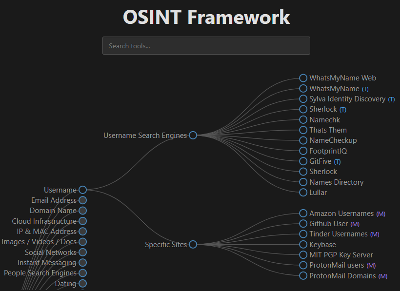
Maigret Tool
Maigret is a powerful open-source OSINT tool for Kali Linux that automates the collection of a target's digital footprint by checking a username against thousands of sites. It is highly efficient for discovering linked accounts, unmasking users, and verifying identities.
أداة Maigret
Maigret أداة OSINT قوية مفتوحة المصدر لنظام Kali Linux تقوم بأتمتة جمع البصمة الرقمية للهدف عن طريق فحص اسم مستخدم مقابل آلاف المواقع. وهي فعّالة جداً في اكتشاف الحسابات المرتبطة، وكشف هوية المستخدمين، والتحقق من الهويات.
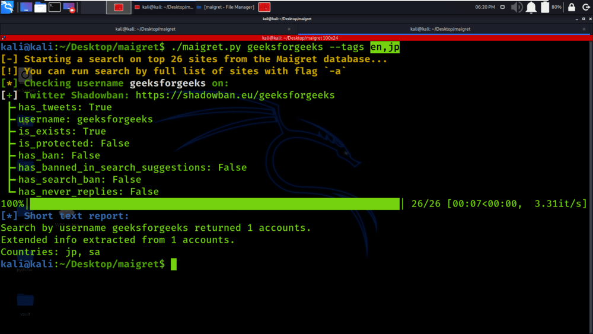
Website footprinting is the process of collecting publicly available information about a target website. The goal is to identify technologies, services, and resources used by an organization without directly accessing internal systems. This information can help security professionals understand the target's online presence and infrastructure. Website footprinting is generally considered a passive reconnaissance technique.
Website analysis can reveal:
- Operating system information
- Web server details
- Software and applications in use
- File and directory names
- Contact information
بصمة الموقع الإلكتروني هي عملية جمع المعلومات المتاحة للعامة عن موقع الهدف. والهدف منها تحديد التقنيات والخدمات والموارد التي تستخدمها المؤسسة دون الوصول المباشر إلى الأنظمة الداخلية. وتساعد هذه المعلومات مختصي الأمن على فهم الحضور الرقمي للهدف وبنيته التحتية. وتُعدّ بصمة المواقع عموماً تقنية استطلاع سلبية.
يمكن لتحليل الموقع أن يكشف:
- معلومات نظام التشغيل
- تفاصيل خادم الويب
- البرمجيات والتطبيقات المستخدمة
- أسماء الملفات والمجلدات
- معلومات الاتصال
The HTML source code of a website often contains useful information that is not immediately visible to users. Hidden form fields, metadata, and developer comments may reveal details about the website's structure and technologies. Cookies can also provide clues about web applications, frameworks, and scripting methods used by the organization. Developers occasionally leave comments in source code that disclose usernames, file paths, or configuration details.
غالباً ما يحتوي كود HTML المصدري للموقع على معلومات مفيدة غير مرئية مباشرة للمستخدمين. فـحقول النماذج المخفية، والبيانات الوصفية (metadata)، وتعليقات المطورين قد تكشف تفاصيل عن بنية الموقع وتقنياته. كما يمكن لـملفات تعريف الارتباط (Cookies) أن توفر أدلة عن تطبيقات الويب وأطر العمل وطرق البرمجة النصية التي تستخدمها المؤسسة. وأحياناً يترك المطورون تعليقات في الكود تكشف عن أسماء مستخدمين أو مسارات ملفات أو تفاصيل إعدادات.
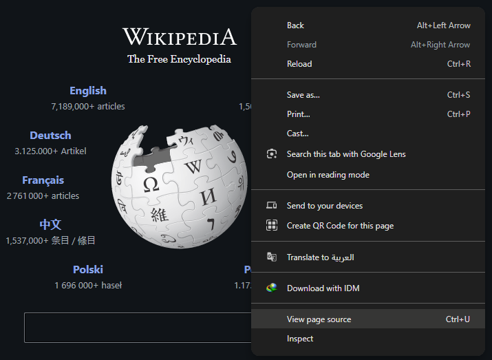
Web mirroring is the process of creating a complete local copy of a website. Having an offline copy allows security professionals to explore the website structure in greater detail and perform analysis without repeatedly accessing the target website.
نسخ الموقع (Web mirroring) هو عملية إنشاء نسخة محلية كاملة من موقع إلكتروني. ووجود نسخة دون اتصال يتيح لمختصي الأمن استكشاف بنية الموقع بتفصيل أكبر وإجراء التحليل دون الوصول المتكرر إلى الموقع المستهدف.
| Tool · الأداة | Website · الموقع |
|---|---|
| HTTrack | www.httrack.com |
| Black Widow | http://softbytelabs.com |
| WebRipper | www.calluna-software.com |
| Teleport Pro | www.tenmax.com |
| GNU Wget | www.gnu.org |
| Backstreet Browser | http://spadixbd.com |
Email communication can be an important source of information during the reconnaissance phase. Messages exchanged between individuals and organizations often contain technical details that may reveal information about systems, networks, and users.
By analyzing email-related information, security professionals can gain insights into the target organization's infrastructure and communication methods.
Email communications may reveal:
- IP addresses
- Geographic location information
- Email server details
- Domain names
- Communication patterns
يمكن أن تكون مراسلات البريد الإلكتروني مصدراً مهماً للمعلومات في مرحلة الاستطلاع. فالرسائل المتبادلة بين الأفراد والمؤسسات تحتوي غالباً على تفاصيل تقنية قد تكشف معلومات عن الأنظمة والشبكات والمستخدمين.
وبتحليل المعلومات المتعلقة بالبريد الإلكتروني، يستطيع مختصو الأمن الحصول على رؤى حول البنية التحتية للمؤسسة المستهدفة وطرق اتصالها.
قد تكشف مراسلات البريد الإلكتروني:
- عناوين IP
- معلومات الموقع الجغرافي
- تفاصيل خادم البريد
- أسماء النطاقات
- أنماط التواصل
Email header
An email header contains technical information that describes how a message traveled from the sender to the recipient. Although hidden from normal view, headers can be displayed and analyzed using most email clients.
Email headers may contain:
- Sender information
- Recipient information
- Date and time stamps
- Mail server names
- Routing information
- Domain details
ترويسة البريد الإلكتروني (Email header)
تحتوي ترويسة البريد على معلومات تقنية تصف كيف انتقلت الرسالة من المرسِل إلى المستلِم. ورغم أنها مخفية عن العرض العادي، إلا أنه يمكن إظهارها وتحليلها باستخدام معظم برامج البريد الإلكتروني.
قد تحتوي الترويسة على:
- معلومات المرسِل
- معلومات المستلِم
- طوابع التاريخ والوقت
- أسماء خوادم البريد
- معلومات التوجيه (Routing)
- تفاصيل النطاق
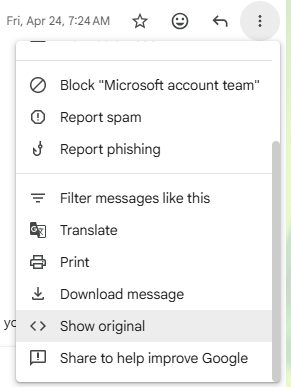
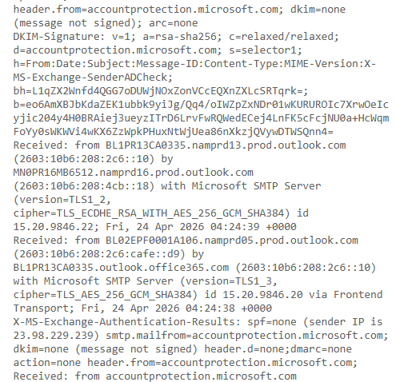
The Domain Name System (DNS) consists of servers distributed across the world. Each DNS server is responsible for managing records within a specific part of the DNS hierarchy, known as a namespace. These records provide information about different network resources and services.
DNS records may contain:
- IP addresses of hosts and servers
- E-mail server information
- References to other DNS servers
- Information that helps users locate network resources
يتكوّن نظام أسماء النطاقات (DNS) من خوادم موزّعة حول العالم. وكل خادم DNS مسؤول عن إدارة السجلات ضمن جزء محدد من التسلسل الهرمي لـ DNS يُعرف باسم مساحة الأسماء (namespace). وتوفّر هذه السجلات معلومات عن موارد وخدمات الشبكة المختلفة.
قد تحتوي سجلات DNS على:
- عناوين IP للأجهزة والخوادم
- معلومات خوادم البريد الإلكتروني
- مراجع لخوادم DNS أخرى
- معلومات تساعد المستخدمين على تحديد موارد الشبكة
DNS follows a hierarchical structure in which each server manages only its assigned namespace. Large DNS servers may manage top-level domains (TLDs) such as .com, while lower-level servers manage specific domains such as mheducation.com.
For example: The DNS server responsible for anyname.com manages all records related to that domain. Users searching for resources within that domain, such as a website or mail server, can obtain the required information from that DNS server.
يتبع DNS بنية هرمية يدير فيها كل خادم مساحة الأسماء المخصصة له فقط. فخوادم DNS الكبيرة قد تدير نطاقات المستوى الأعلى (TLDs) مثل .com، بينما تدير الخوادم الأدنى مستوىً نطاقات محددة مثل mheducation.com.
مثال: خادم DNS المسؤول عن anyname.com يدير كل السجلات المتعلقة بذلك النطاق. والمستخدمون الباحثون عن موارد داخل ذلك النطاق، كموقع أو خادم بريد، يمكنهم الحصول على المعلومات المطلوبة من ذلك الخادم.
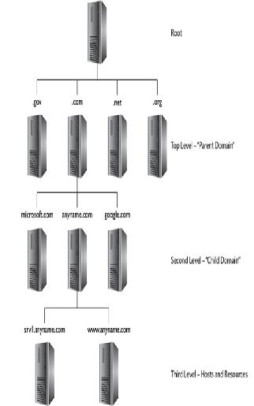
Although DNS is essential for Internet communication, its records can reveal valuable information about a network's structure.
By examining DNS records, an attacker may identify:
- The authoritative DNS servers
- E-mail servers used by the organization
- Public-facing web servers
- Other important network resources
As a result, DNS information can be a valuable source of intelligence during the footprinting and reconnaissance phases of an attack.
رغم أن DNS ضروري للاتصال عبر الإنترنت، إلا أن سجلاته قد تكشف معلومات قيّمة عن بنية الشبكة.
بفحص سجلات DNS قد يحدد المهاجم:
- خوادم DNS الموثوقة (authoritative)
- خوادم البريد الإلكتروني التي تستخدمها المؤسسة
- خوادم الويب العامة
- موارد شبكية مهمة أخرى
ونتيجة لذلك، تكون معلومات DNS مصدراً استخباراتياً قيّماً أثناء مرحلتي البصمة والاستطلاع في الهجوم.
Whois is becoming ubiquitous in operating systems everywhere; it queries the registries and returns information, including domain ownership, addresses, locations, and phone numbers.
أصبحت أداة Whois موجودة في كل أنظمة التشغيل تقريباً؛ فهي تستعلم من السجلات (registries) وتُرجع معلومات تشمل ملكية النطاق، والعناوين، والمواقع، وأرقام الهواتف.
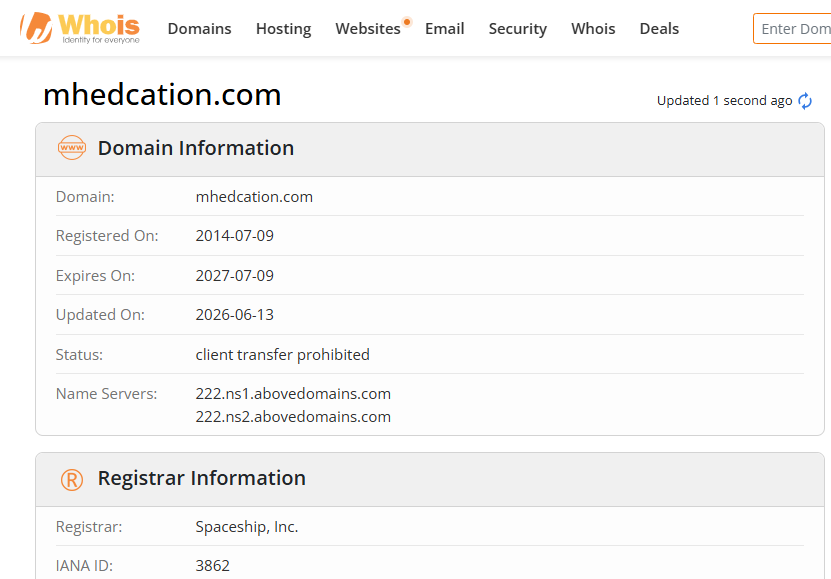
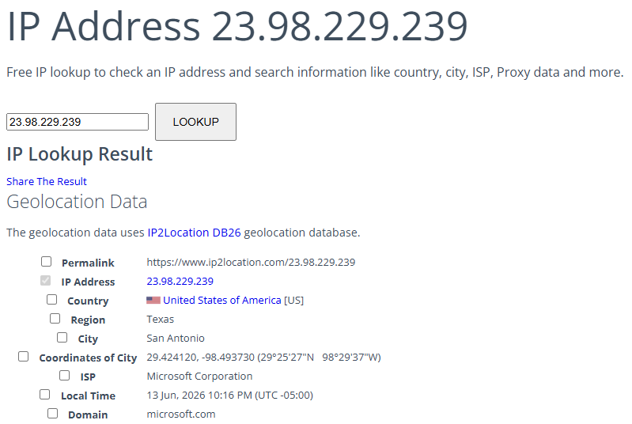
Network footprinting is the process of identifying and defining the IP address range used by a target organization. Determining the network range helps security professionals understand the target's network structure and reduces the time required for further reconnaissance activities.
Knowing the start and end points of an organization's IP address range makes it easier to identify active hosts, services, and network devices during later phases of an assessment.
بصمة الشبكة هي عملية تحديد وتعريف نطاق عناوين IP الذي تستخدمه المؤسسة المستهدفة. وتحديد نطاق الشبكة يساعد مختصي الأمن على فهم بنية شبكة الهدف ويقلّل الوقت اللازم لأنشطة الاستطلاع اللاحقة.
ومعرفة نقطتي بداية ونهاية نطاق عناوين IP للمؤسسة تُسهّل تحديد الأجهزة النشطة والخدمات وأجهزة الشبكة في المراحل اللاحقة من التقييم.
ARIN as a Footprinting Resource
The American Registry for Internet Numbers (ARIN) maintains information about IP address allocations and network ownership.
By searching an IP address in ARIN, the following information may be obtained:
- Network address range
- Organization that owns the IP addresses
- Administrative contacts
- Technical contacts
- Additional registration details
ARIN كمصدر للبصمة
يحتفظ السجل الأمريكي لأرقام الإنترنت (ARIN) بمعلومات حول تخصيصات عناوين IP وملكية الشبكات.
بالبحث عن عنوان IP في ARIN يمكن الحصول على:
- نطاق عناوين الشبكة
- المؤسسة المالكة لعناوين IP
- جهات الاتصال الإدارية
- جهات الاتصال التقنية
- تفاصيل تسجيل إضافية
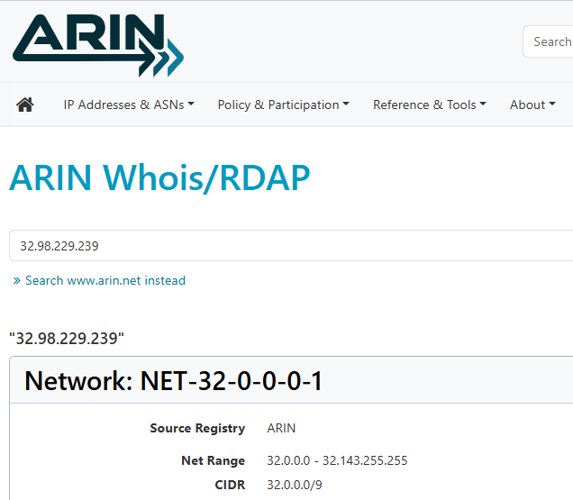
Traceroute (or tracert in Windows) is a command-line tool used to track the path that packets take across a network from a source system to a destination system.
The tool helps security professionals identify the route followed by network traffic and measure the time required to reach each device along the path. This information is useful during the footprinting and reconnaissance phases of an assessment.
Traceroute (أو tracert في ويندوز) هي أداة سطر أوامر تُستخدم لتتبّع المسار الذي تسلكه الحزم عبر الشبكة من النظام المصدر إلى النظام الوجهة.
وتساعد الأداة مختصي الأمن على تحديد المسار الذي تتبعه حركة الشبكة وقياس الوقت اللازم للوصول إلى كل جهاز على المسار. وهذه المعلومات مفيدة أثناء مرحلتي البصمة والاستطلاع.
Traceroute discovers the path to a destination by sending packets with gradually increasing Time-To-Live (TTL) values.
The process works as follows:
- A packet is sent with a small TTL value.
- Each router along the path decreases the TTL by one.
- When the TTL reaches zero, the router sends a response back to the source.
- Traceroute records the router's IP address, hostname, and response time.
- The TTL value is increased, and the process repeats until the destination is reached.
- This method reveals each network device, or hop, between the source and destination.
تكتشف Traceroute المسار إلى الوجهة بإرسال حزم ذات قيم TTL (زمن البقاء) متزايدة تدريجياً.
وتسير العملية كالتالي:
- تُرسَل حزمة بقيمة TTL صغيرة.
- كل موجّه على المسار ينقص TTL بمقدار واحد.
- عندما تصل TTL إلى الصفر، يُرسل الموجّه رداً إلى المصدر.
- تسجّل Traceroute عنوان IP للموجّه واسم المضيف وزمن الاستجابة.
- تُزاد قيمة TTL وتتكرر العملية حتى الوصول إلى الوجهة.
- تكشف هذه الطريقة كل جهاز شبكي أو «قفزة» (hop) بين المصدر والوجهة.
Open the command prompt and type:
(as written on the slide; the actual Windows command is tracert example.com — see the screenshot below)
افتح موجّه الأوامر واكتب:
(كما كُتب في الشريحة؛ والأمر الفعلي في ويندوز هو tracert example.com — انظر لقطة الشاشة أدناه)
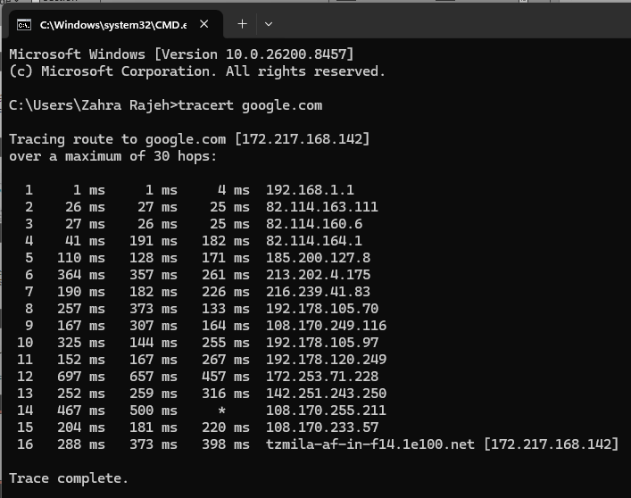
tracert google.com: “Tracing route to google.com [172.217.168.142] over a maximum of 30 hops” … Trace complete.الشريحة ٥١ — تنفيذ tracert google.com مع حد أقصى ٣٠ قفزة حتى اكتمال التتبع.OSRFramework — slide 53إطار OSRFramework
Purpose: Perform Open-Source Intelligence (OSINT) investigations.
Information Obtained:
- Usernames
- E-mail addresses
- Domains
- Phone numbers
- Online profiles
Use in Footprinting: Automates information gathering from multiple public sources.
الغرض: إجراء تحقيقات الاستخبارات مفتوحة المصدر (OSINT).
المعلومات التي يحصل عليها:
- أسماء المستخدمين
- عناوين البريد الإلكتروني
- النطاقات
- أرقام الهواتف
- الملفات الشخصية على الإنترنت
الاستخدام في البصمة: يقوم بأتمتة جمع المعلومات من مصادر عامة متعددة.
Web Spiders — slide 54عناكب الويب
Purpose: Crawl websites and collect information.
Information Obtained:
- Web pages
- Directories
- Links
- Publicly accessible resources
Use in Footprinting: Maps website structure and identifies hidden or forgotten content.
الغرض: الزحف على المواقع وجمع المعلومات.
المعلومات التي تحصل عليها:
- صفحات الويب
- المجلدات
- الروابط
- الموارد المتاحة للعامة
الاستخدام في البصمة: ترسم بنية الموقع وتحدد المحتوى المخفي أو المنسي.
Maltego — slide 55مالتيجو
Purpose: Analyze and visualize relationships between entities.
Information Obtained:
- Domain relationships
- E-mail addresses
- Social media profiles
- Organizations and individuals
Use in Footprinting: Helps correlate information and discover connections that may not be immediately visible.
الغرض: تحليل وتصوير العلاقات بين الكيانات بصرياً.
المعلومات التي يحصل عليها:
- علاقات النطاقات
- عناوين البريد الإلكتروني
- ملفات وسائل التواصل الاجتماعي
- المؤسسات والأفراد
الاستخدام في البصمة: يساعد على ربط المعلومات واكتشاف الصلات التي قد لا تكون ظاهرة مباشرةً.